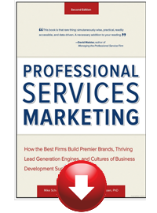

Articles
Paige Arnof-Fenn, The founder of Mavens & Moguls, is a popular columnist whose articles are syndicated around the world
Click below to read some of her favorites:
Monthly column with Forbes "The Entrepreneur's Playbook"
Beware of Business Bullies
At the Sports Museum at Boston’s TD Garden, where I serve as chair of the board of trustees, we’ve launched an initiative called Boston vs. Bullies to help at risk youth learn ways to combat bullying using lessons from sports.
Read article »
Madonna, Gaga & Growth
I started my company more than 10 years ago and like any business that has survived for more than a decade, you have to keep reinventing yourself and add new tools to the toolkit if you want to stay relevant and thrive. …
Read article »
Leadership Lessons On & Off The Court
I’ve been a sports fan since I was a kid, and living in Boston now has made it fun and easy for me to continue following teams I love…
Read article »
Lessons In Leadership, Resilience & Innovation
As an entrepreneur and business owner I see examples of innovation everywhere, I think it is part of the entrepreneurial DNA…
Read article »
Risk, Reward & Resilience
I am a long time fan of late night television and wanted to get David Letterman as our graduation speaker…
Read article »
Yahoo Article on Networking While You Eat
At a late morning meeting recently with a fellow entrepreneur, as we were wrapping up I mentioned my next meeting had been postponed and asked if he had time to grab a bite to eat…
Read article »
Connect In Meaningful Ways
I have a confession to make. I am not on Facebook, I do not Tweet and I still consider myself a marketing expert…
Read article »
Monthly column with Entrepreneur
Business Advice From A Southern Entrepreneur
These down-home expressions have plenty of advice to offer new business owners. See what you can learn from these nine sayings.
Read article »
Why You Should Mind Your Manners
These eight tips prove that courtesy does count for small businesses.
Read article »
Encouraging Positive Change
Want to make this the best year ever? It's time to make some changes that'll set you up for success.
Read article »
A Recipe For Productivity
Are business board meetings getting stale? A company retreat may be the answer to pump up your team and get the creative juices flowing.
Read article »
Freshen Up Your Website
Less isn't always more. An oversimplified website may be driving away business.
Read article»
Making The Most Of What You Have
Sometimes, seeing the silver lining is all you need to keep your business burning bright. If you believe the saying that what doesn't kill you makes you stronger, then the people in New Orleans have got to be among the strongest people in the world. I went back home several times in the past year and each trip brought a new level of appreciation and gratitude for what my friends and family have been dealing with for the past few years...
Read article »
Action Through Inaction
Incorporate the lessons of Tai Chi and Qigong into your daily life as an entrepreneur...
Read article »
Give Yourself The Gift Of Time
Spending time reflecting away from work can help you find clarity on your business and life. Read article »
Body Language Speaks Louder Than Words
Hire smart by looking past what references say about former employees and finding out what they mean. Nonverbal cues can often tell you more about a person than what that person spells out in an e-mail or conversation. One area where this comes up for many entrepreneurs is in hiring. When you ask most CEOs or business owners what keeps them up at night, it's either that they don't have enough good employees to grow or the ones they have are driving them crazy...
Read article »
Business Lessons From Mom
You never thought you'd admit it, but Mom was right. So sit up and pay attention to how her lessons growing up will help you become a successful entrepreneur today.
Read article»
Business Lessons From Dad
7 things my dad always did that helped me succeed in business today.
Read article »
Leaving A Legacy
Do you know what sort of impact you want to make on the world and how your business and your life factor into that.
Read article »
Creating A Brand
Whether you're selling your expertise or the face behind a product, your image directly affects your customers. Here's how to create a brand when the brand is you.
Read article »
Failing Your Way To Success
Don't let a failed startup kill your entrepreneurial dreams. Get back in the saddle again with these encouraging words of wisdom.
Read article »
Take Time Off From Your Startup
Planning--and taking--a well-deserved vacation the right way can refresh your spirits and your business.
Read article »
Gauging The Success Of Your Business
Building a business based on what you value most--not what you earn--will guarantee its success and your happiness.
Read article »
The ABCs Of Entrepreneurship
Whether you're just starting out or struggling through a rut, relearning your ABCs may be just the attitude adjustment you need to take your business to the next level.
Read article»
Is Business Just A Dating Game?
Apply the rules of romance to your business relationships and win your clients' hearts.
Read article »
The Ins And Outs Of Building Trust, Believing In Others And Spotting The Marks Of A Disingenuous Dealer.
Read article »
Your Pay Check
How do you know when--and how much--to pay yourself?
Read article »
A Fight Or Flight Reaction
Frivolous litigation is a fear that strikes the heart of every business owner. Here's what you can do about it...
Read article »
Attracting Success In The New Year
Letting go is a resolution that will save you time, money and heartache in the long run...
Read article »
Organizing Your Home Office
Make a resolution to get organized--and stay that way--the entire year with these four tips.
Read article »
Spice Up Your Summer Schedule
Is summer your slow season? It doesn’t have to be.
Read article »
Take A Break While The Weather’s Still Good
Recharge your batteries, connect with your team in a new way, and have some fun while the summer sun lasts.
Read article »
The Cost Of Customer Loyalty
When my favorite local coffee shop made a few too many changes, it forced customers away. How can you avoid this same mistake?
Read article »
Make Every Meeting Count
Sharpen your presentation skills with these simple steps to make the most of your meetings.
Read article »
How Do You Stay Connected?
This month I talk about celebrating my 20-year college reunion. I love any kind of reunion. They're great opportunities to reconnect with old friends and meet new ones with whom you share some common history. Gatherings like these allow you to rejuvenate, relax and remember people, places and things you enjoyed in the past and can still relate to today. Read more...
Read article »
How To Keep A Tight Ship When Life's Inevitable Storms Arise
There's a lot of press today about people in their prime career years being the sandwich generation--caught between aging parents and growing families. I'm here to tell you that there can be open-faced sandwiches (no kids), as well as club sandwiches, with businesses layered in between family obligations. These can lead to high pressure situations for even the most prepared and organized entrepreneurs...
Read article »
Manage Your Time And Business
You still hear a lot about sharing best practices across categories and industries. There are consultants and firms that have built entire businesses in this area. For example, I often see aspects of a technology firm that apply to a consumer products company or a nonprofit, despite their seeming differences...
Read article »
Plan Ahead For Low-Stress Holidays
Start thinking about the holidays long before they hit so you’ll be cool and collected come December.
Read article »
Getting Outside Help
It can be lonely at the top. Get help for your toughest business decisions by joining other fellow business owners.
Read article »
Is It The Right Time To Launch Your Business?
This successful entrepreneur points out five signs that will help you determine if it's now or never for your big business idea.
Read article »
New Year, New Resolutions
Get the update on the writer’s resolution to get organized, plus tips on making your promises a success.
Read article »
The Partner Track
How to decide if you should fly solo or not: the second in a two-part series on business partnerships.
Read article »
Should You Partner Up When It Comes to Business?
7 questions to ask yourself when considering a partnership.
Read article »
What To Do--And Not Do--As A Startup
These seven lessons will help keep you on track during the early stages of your business.
Read article »
Make Business Travel More Comfortable
Avoid upsetting flight delays and lost luggage with these 6 tips for business travelers.
Read article »
Launch and Grow Your Small Business Now."
Read article »
Listening Tour for business success
Read article »
Smart Women Interviews: Paige Arnof-Fenn
Read interview with Mavens & Moguls CEO here
Read article »
Going Global
Read article »
CEO Blog Nation
Read article »
CEO interview with CMO magazine on future role of CMOs
Read article »
Inspirational quote on leading women's web site by CEO
Listen to audio »
Secrets to a long marriage
Read Article »
Cover 2 Cover Magazine Articles
Are you passionately curious?
Read article »
To your health!
Read article »
Main Street to Capitol Hill, Are you listening?
Read article »
Religious Truisms
Read article »
The Power of Positive Thinking
Read article »
Enrich your life through travel
Read article »
Grace Under Pressure
Read article »
Continuing Education
Read article »
Timeless advice, always is style
Read article »
Play it again Sam
Read article »
Think about what you truly cherish
Read article »
E-book: The One Piece of Advice You Can't Sell Without
Paige contributed to an e-book about the best sales advice with chapters from other thought leaders including Seth Godin, Alan Weiss, Jill Konrath, Paul Dunay and Keith Ferrazzi.
Download e-book »
Text Book: Entrepreneurship Strategy
Paige also wrote the foreword to a textbook on Entrepreneurial Marketing being used at leading business schools.
Read the foreword »
Purchase book »
Contact Mavens & Moguls for practical advice from real world experience.